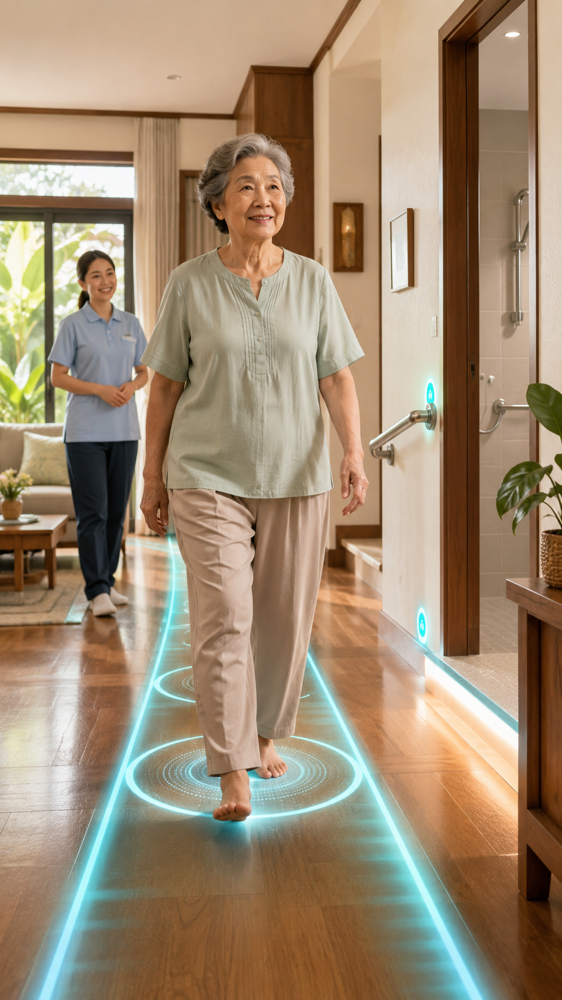

แผน 01 · CARE PLAN TYPE 01 · TEAM 4

แผนฟื้นฟูหลักของคุณ
แผนเดินมั่นใจ
ลดเสี่ยงล้ม
ตอนนี้เป้าหมายสำคัญคือทำให้ทางเดินหลักในบ้านปลอดภัยขึ้น ก่อนเพิ่มระยะและความยาก
โรค/ภาวะที่เกี่ยวข้อง
สิ่งเหล่านี้อาจทำให้การเดินไม่มั่นคงร่วมกัน กดเพื่ออ่านความเกี่ยวข้องกับแผนนี้
3 ปัญหาหลักที่ควรจัดการก่อน
แต่ละปัญหามีทางเริ่มดูแลต่างกัน บางส่วนทำเองได้ และบางส่วนต้องประเมินจากการเคลื่อนไหวจริง
0/2
01
การทรงตัวและความเสี่ยงล้ม
การเลี้ยวตัวและเปลี่ยนทิศทางยังไม่มั่นคง ทำให้ต้องจับของระหว่างเดินและเสี่ยงล้มในพื้นที่แคบ
แผนจัดการปัญหานี้
เริ่มฝึกการลุก เดิน และเลี้ยวในเส้นทางสั้นที่โล่ง มีจุดจับมั่นคงและคนดูอยู่ใกล้ ๆ ก่อนเพิ่มระยะทาง
บันทึกข้อมูลด้วยตัวเองเพื่อปรับแผนให้ละเอียดขึ้น
ล้มหรือเกือบล้มในช่วง 30 วันกรอกจำนวนครั้งที่เกิดขึ้นจริง โดยไม่ต้องทดลองเดินเพิ่ม
›
รวมทั้งเหตุการณ์ที่ล้มจริง และเหตุการณ์ที่ต้องรีบจับของหรือมีคนช่วยไว้จึงไม่ล้ม
ส่วนที่ต้องประเมินจากการเคลื่อนไหวจริง
02
แรงขาไม่พอสำหรับการลุกและก้าวอย่างมั่นคง
เมื่อลุกจากเก้าอี้ต้องใช้มือดันมาก ร่างกายจะเหลือกำลังน้อยลงสำหรับการทรงตัวและเดินต่อ
แผนจัดการปัญหานี้
เริ่มฝึกลุกนั่งจากเก้าอี้ที่มีความสูงเหมาะสมครั้งละน้อย เน้นควบคุมการเคลื่อนไหวและพักก่อนที่ขาจะล้า
ประเมินด้วยตัวเองเพื่อปรับจำนวนครั้งและเวลาพัก
นับจำนวนลุกนั่งใน 30 วินาทีดูท่าสาธิตแล้วกรอกจำนวนครั้ง เพื่อปรับความหนักและเวลาพัก
›
ใช้เก้าอี้ที่ไม่เลื่อน ไขว้แขนไว้ที่หน้าอก และมีผู้ดูแลยืนใกล้ ๆ หากต้องใช้มือช่วย ให้หยุดและบันทึก 0 ครั้ง ส่วนตอนฝึกจริงยังใช้มือช่วยได้ตามความปลอดภัย
03
บ้านและอุปกรณ์ยังไม่รองรับการเดินอย่างปลอดภัย
ทางเดินไปห้องน้ำ จุดเลี้ยว และตำแหน่งของใช้ อาจทำให้การเดินที่พอทำได้อยู่แล้วกลายเป็นเรื่องเสี่ยง
สิ่งที่เริ่มทำได้ทันที
- เก็บพรม สายไฟ และของกีดขวางออกจากทางเดินที่ใช้ประจำ
- เพิ่มแสงสว่างช่วงกลางคืนและเตรียมรองเท้ากันลื่น
- วางของใช้จำเป็นให้อยู่ในระยะที่ไม่ต้องเอื้อมหรือหมุนตัวเร็ว
ส่วนที่ต้องดูร่วมกับผู้ป่วยในพื้นที่จริง
แผนฝึกเริ่มต้น · 2 ท่า
ฝึกแรงขาและการถ่ายน้ำหนักก่อนเพิ่มระยะเดิน
ทำเฉพาะเมื่อยืนได้อย่างปลอดภัย มีจุดจับมั่นคงและคนดูอยู่ใกล้ ๆ หากมีอาการผิดปกติให้หยุดทันที
ท่า 01 · แรงขา
ลุกนั่งจากเก้าอี้
ช่วยเพิ่มแรงขาและฝึกลำดับการลุกอย่างมั่นคง
จำนวนเริ่มต้น3–5 ครั้ง
รอบพัก1–2 รอบ
ความถี่
ความหนัก
เวลาและปริมาณ
รูปแบบ
วางเท้าใต้เข่า โน้มตัวไปข้างหน้าแล้วดันขึ้นช้า ๆ ใช้มือช่วยได้ตามความจำเป็น หยุดหากหน้ามืด เข่าทรุด หรือเสียสมดุล
ท่า 02 · การทรงตัว
ถ่ายน้ำหนักซ้าย–ขวาใกล้จุดจับ
ช่วยเตรียมการลงน้ำหนักทีละข้างก่อนเริ่มก้าวเดิน
จำนวนเริ่มต้นข้างละ 5 ครั้ง
จังหวะช้าและคุมได้
ความถี่
ความหนัก
เวลาและปริมาณ
รูปแบบ
จับโต๊ะหรือราวที่มั่นคง เคลื่อนน้ำหนักไปด้านข้างโดยลำตัวยังตรง ไม่ยกเท้า และมีคนดูอยู่ใกล้ ๆ หากยังยืนเองไม่ปลอดภัยให้ข้ามท่านี้
ปรับระดับอย่างไรให้ปลอดภัย
ปรับโปรแกรมให้เฉพาะตัวขึ้น
คำตอบด้านบนจะช่วยปรับระดับความหนัก จุดที่ควรระวัง และลำดับการฝึกให้เหมาะขึ้น
เหลือแบบประเมินด้วยตัวเองอีก 2 หัวข้อ
แผนของคุณได้รับการปรับแล้ว
นำข้อความนี้ไปวางใน AI ที่คุณใช้ เช่น ChatGPT, Claude, Gemini, Grok หรือแอปอื่น ๆ เพื่อให้ช่วยวิเคราะห์อาการและถามต่อจากข้อมูลของคุณได้